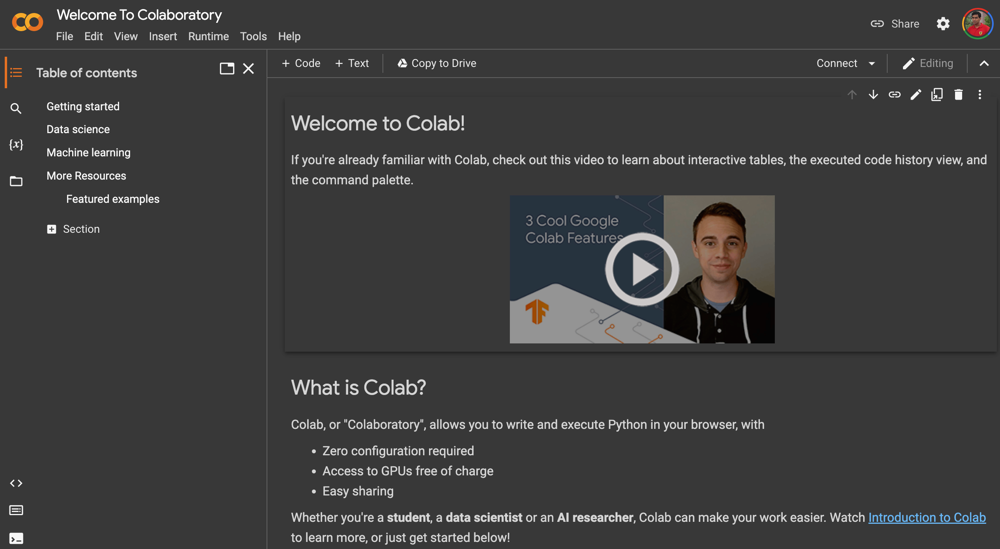

More Modules
In the previous chapter you used you saw how packages are built in Python. You also built and imported a module that you had made yourself. The power of using Python modules is that you can import modules that are built by others. Often these packages are accumulation of many years of work by a large army of engineers. Python has thousands of free packages that you can use to make your own impressive programms. In this chapter we see a very quick introduction to a couple of packages that helps you build cool applications.
Google Colab
For this chapter we are going to use a very powerful tool for writing and testign Python code quickly. Google Colab is a category of softwares known as notebooks. They help you write a program in small units called cells, and run them together. They also help you have other things along with your code. You can include pictures, movies and of course notes in a botebook.
The first step to use Colab is having a Google account and being logged in. Then go to the following address:
https://colab.research.google.com
Now you should see the Colab first page that in October 2022, looks like the following image. Notice that if you have logged in your browser, you should see your Google profile image in the top right corner; as you see mine here.
